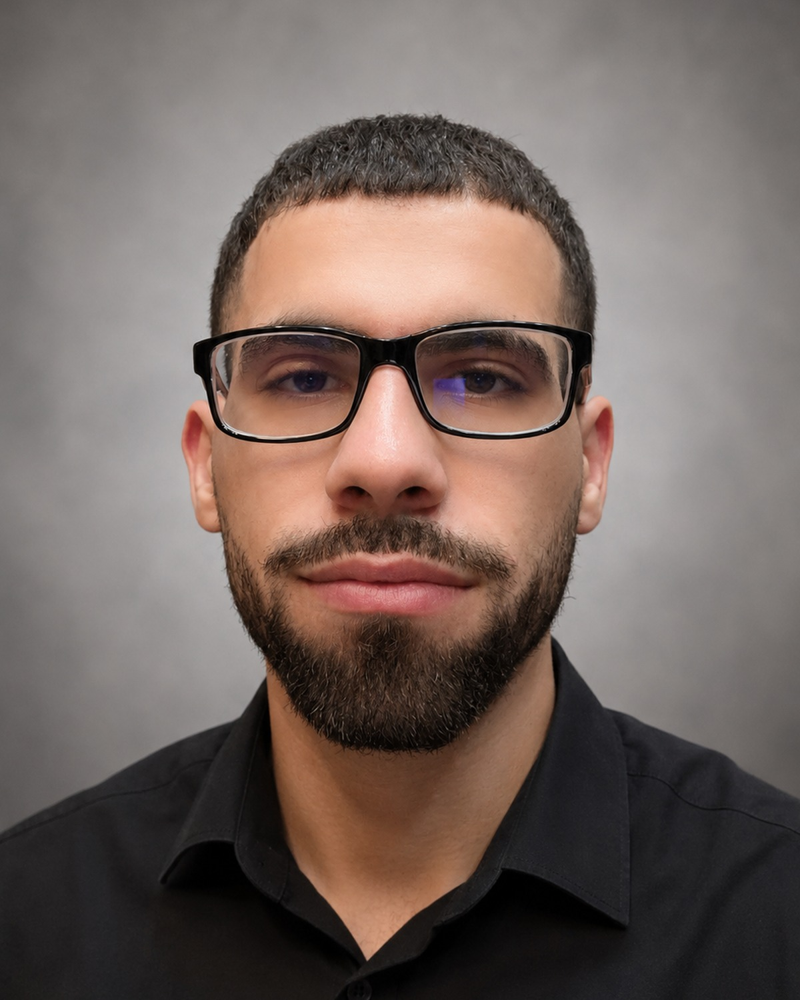

AI for Engineering
Applying machine learning and modern AI methods to engineering problems where physical behavior, constraints, and domain knowledge matter.
Mechanical Engineering · Carnegie Mellon University
I am a PhD student in Carnegie Mellon University's Visual Design and Engineering Lab (VDEL), with broad interests in artificial intelligence, computational engineering, and engineering design.
My work is motivated by a simple question: how can computational tools make engineering analysis, design, and decision-making more capable without losing physical grounding or engineering judgment?

About
I am interested in computational methods that are useful to practicing engineers and remain connected to the physical systems they represent.
I earned my B.S. in Mechanical Engineering from the University of Texas at Tyler, graduating with a 3.95 GPA after five appearances on the President's List and receiving the College of Engineering's Outstanding Student recognition. I was also named a NASA / Texas Space Grant Consortium Scholar in 2025.
My research experience has spanned machine-learning-enhanced molecular dynamics of nanoscale silicon, machine learning for CO₂ sequestration and subsurface hydrogen storage, non-invasive ultrasound imaging, embedded systems, engineering design, CAD and simulation, and software development. I completed an NSF-funded O-REU at Texas A&M University and previously worked as an undergraduate research assistant and engineering lab assistant at UT Tyler.
Beyond research, I served as President of the UT Tyler ASME student section and led the software effort for a senior capstone project developing a connected sensory bonding device for premature infants in the NICU. My technical background includes Python, MATLAB, LAMMPS, OVITO, CAD tools, embedded systems, and machine learning.
Research
Applying machine learning and modern AI methods to engineering problems where physical behavior, constraints, and domain knowledge matter.
Computational approaches that support engineers in creating, analyzing, adapting, and evaluating engineered systems.
Scientific computing, simulation, and data-driven methods for understanding physical systems across different scales and applications.
Selected work
A selection of work spanning nanoscale simulation, applied machine learning, embedded systems, and engineering design.
NSF-funded research on nanoscale silicon deformation using molecular dynamics and machine-learned interatomic potentials.
View project poster ↗Led the development of a connected device designed to reproduce sound, scent, and haptic cues associated with a parent for premature infants in a NICU incubator.
Media coverage ↗Worked across machine learning for CO₂ sequestration and subsurface hydrogen storage, ultrasound imaging, and an ANN-integrated portable desalination system.
Background
PhD, Mechanical Engineering · Visual Design and Engineering Lab (VDEL)
B.S., Mechanical Engineering · GPA 3.95 · Outstanding Student, College of Engineering · President's List (5×)
NSF O-REU Research Intern · Materials Science and Engineering
Updates
Joined Carnegie Mellon University as a PhD student in Mechanical Engineering.
Graduated from the University of Texas at Tyler with a B.S. in Mechanical Engineering.
Completed an NSF-funded O-REU at Texas A&M University studying nanoscale silicon deformation.
Contact